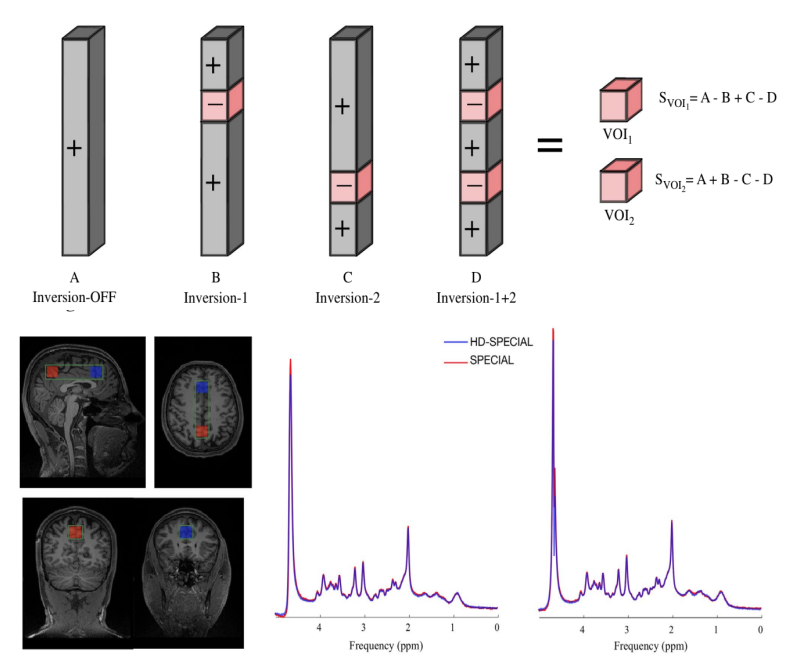
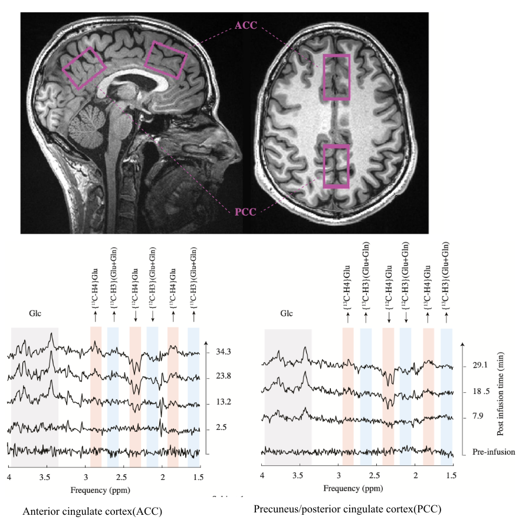
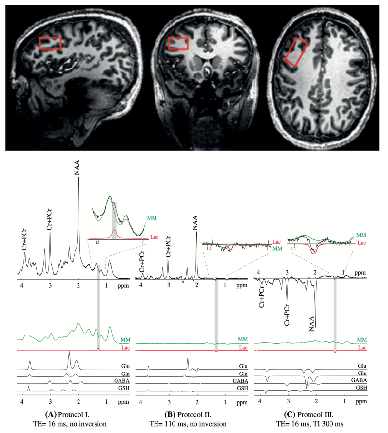
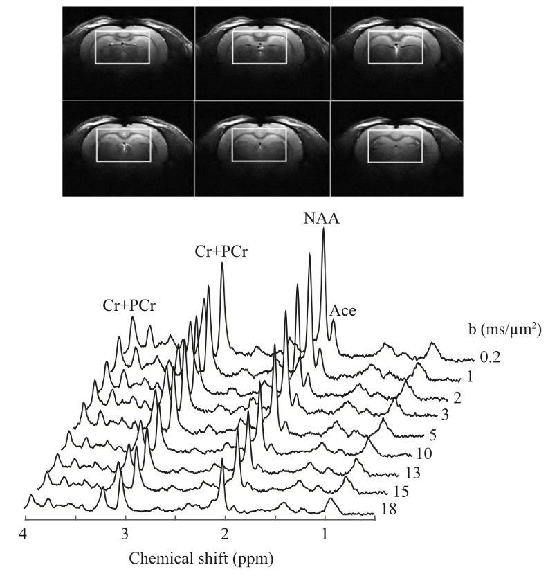
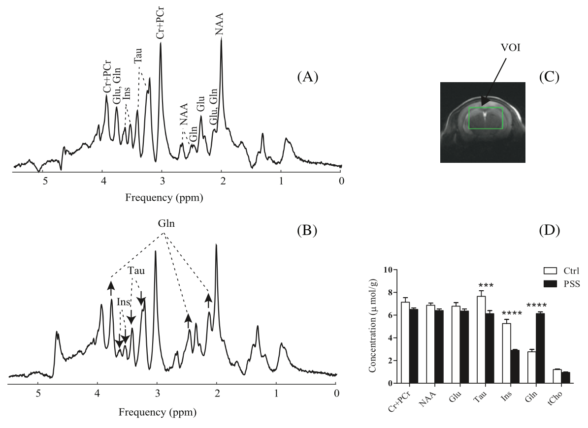
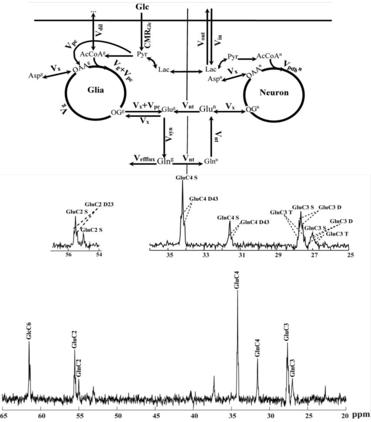

My Academy background
My academic research has been focused moslty in clinical and preclinical neuroscience. I developed novel medical imaging techniques in MRI system to study brain metabolism in bpth human and rodents. My research achievemnt include:
Development and optimization of c++ base codes(MRI pulse sequences) and analysis tools to support clinical and translational spectroscopy research on 3T and 7T Siemens scanners Development of metabolic neuronal network model and simulation in Matlab to obtain in-depth insight into the molecular mechanisms in brain Implementation of pre-processing pipelines including simulation, signal processing and analysis Contributing to FID-A development, an openly available analysis tool package written in Matlab for MRS data analysis Collaborating with scientists and clinicians on research projects, both locally and internationally
Publications
Hadamard-encoded dual-voxel SPECIAL: Short-TE MRS acquired
in two brain regions simultaneously using Hadamard encoding
 The spin-echo, full-intensity acquired localized (SPECIAL) sequence is a method for single-voxel, localized MRS in vivo with short TEs. In this study we modified the SPECIAL sequence to simultaneously record spectra from two volumes of interest. This new technique is called Hadamard-encoded dual-voxel SPECIAL (HD-SPECIAL). The HD-SPECIAL sequence enables reliable acquisition of MR spectra simultaneously from two regions at 3 T, offering the potential to study interregional variations in metabolite concentrations.
Dynamic 1H-MRS for detection of 13C-labeled glucose metabolism in the human brain at 3T
 In 2004, Boumezbeur et al proposed a simple yet powerful approach to detect the metabolism of 13C-enriched substrates in the brain. Their approach consisted of dynamic 1H-MRS, without a 13C radiofrequency (RF) channel, and its successful application was demonstrated in monkeys. Since then, this promising method has yet to be applied rigorously in humans. In this study, we revisit the use of dynamic 1H-MRS to measure the metabolism of 13C-enriched substrates and demonstrate its application in the human brain.These preliminary results confirm the feasibility of the use of dynamic 1H-MRS to monitor 13C labeling in the human brain, without a 13C RF channel
Lactate measurement by neurochemical profiling in the dorsolateral prefrontal cortex at 7T: accuracy, precision, and relaxation times

Lactate, a metabolic product of glycolysis and an intermediate in
the energy metabolism of carbohydrate‐consuming organs has been recently shown to play a criti- cal role in neuroplasticity
and neuroprotection. In this study, we aim to assesses the potential of measuring lactate in the human brain using three non‐editing MRS methods at
7T and compares the accuracy and precision of the methods.we aimed to assess and compare three 1H MRS approaches (short‐TE, long TE, and inversion recovery)
for simultaneous neurochemical profiling in the dorsolateral prefrontal cortex of the human brain at 7T, with a focus on the accuracy and precision
of the lactate measurement. In addition, to correct for relax- ation effects on the lactate signal, T1 and T2 relaxation times of lactate were also measured.
Diffusion‐weighted MRS of acetate in the rat brain

Acetate has been proposed as an astrocyte‐specific
energy substrate for metabolic studies in the brain. The determination of the relative contribution of the intracellular and extracellular
compartments to the acetate signal using diffusion‐weighted magnetic resonance spectroscopy can provide an insight into the cellular
environment and distribution volume of acetate in the brain. In this study, localized 1H nuclear magnetic resonance (NMR)
spectroscopy employing a diffusion‐weighted stimulated echo acquisition mode (STEAM) sequence at an ultra‐high magnetic field
(14.1 T) was used to investigate the diffusivity characteristics of acetate and N‐acetylaspartate (NAA) in the rat brain in vivo
during prolonged acetate infusion.
Diffusion behavior of cerebral metabolites of congenital portal systemic shunt mice assessed noninvasively by diffusion‐ weighted 1H magnetic resonance spectroscopy

Congenital portal systemic shunts (PSS) are rare
vascular abnormalities in which mesenteric blood bypasses the liver and drains into a systemic vein. 1H MR spectroscopy
(MRS) combined with diffusion spectroscopy (DW‐MRS) allows for noninvasive investigation of the diffusion process of endogenous
molecules in the brain, and has the potential to shed insight into alterations of cellular restrictions experienced by metabolites,
as well as the cellular compartmentalization of molecules in diseases. Therefore, in this study, we aimed to take advantage of the
remarkable sensitivity and spectral resolution of DW-MRS at 14T for a precise assessment
of diffusivities of abundant cerebral metabolites in healthy and shunt mice.
Refined Analysis of Brain Energy Metabolism Using In Vivo Dynamic Enrichment of 13C Multiplets

Carbon-13 nuclear magnetic resonance spectroscopy
in combination with the infusion of 13C-labeled precursors is a unique approach to study in vivo brain energy metabolism.
Incorporating the maximum information available from in vivo localized 13C spectra is of importance to get broader knowledge
on cerebral metabolic pathways. Metabolic rates can be quantitatively determined from the rate of 13C incorporation into
amino acid neurotransmitters such as glutamate and glutamine using suitable mathematical models. The time course of multiplets arising
from 13C-13C coupling between adjacent carbon atoms was expected to provide additional information for metabolic
modeling leading to potential improvements in the estimation of metabolic parameters. The aim of the present study was to extend
two-compartment neuronal/glial modeling to include dynamics of 13C isotopomers available from fine structure multiplets in
13C spectra of glutamate and glutamine measured in vivo in rats brain at 14.1 T, termed bonded cumomer approach.
Incorporating the labeling time courses of 13C multiplets of glutamate and glutamine resulted in elevated precision of the estimated
fluxes in rat brain as well as reduced correlations between them.
PhD Thesis
Proton diffusion spectroscopy and modeling of brain metabolism at 14.1T
Ecole Polytechnique Federal de Lausanne
Nuclear magnetic resonance (NMR) spectroscopy is intrinsically interdisciplinary, embracing physics, mathematics, neuroscience and physical biochemistry. As a field at the CIBM, NMR spectroscopy can be applied non-invasively to explore the metabolic fate of energy fuel substrates, as well as the rate at which they are consumed, using 13C and 1H nuclei. The work of this thesis encompasses both nuclei, and focuses on (1) improving the quantification and modeling of glucose-derived metabolites; and (2) characterizing diffusion-related parameters of the purportedly glial-specific energy substrate, acetate. Both aim to quantitatively explore cerebral energy metabolism, at ultra-high magnetic field, in vivo, in the healthy rat. 13C NMR spectroscopy, as a tool, enables measuring the progressive incorporation of 13C-glucose into brain glucose and then NMR detectable amino acids (glutamate and glutamine); this relies on the infusion of the 13C-labeled energy substrate. The experimentally obtained 13C labelling curves are analyzed using suitable mathematical models to provide an estimation of cerebral metabolic rates. Here, a dynamic model of time-courses of 13C multiplets arising from isotopomers was considered. So beyond the two-compartment neuronal-glial model, we took into account additional data on the dynamics of 13C isotopomers, available from the fine structure multiplets in 13C spectra of glutamate and glutamine, measured under prolonged [1-6,13C] glucose infusion. We concluded that the dynamic analyses of 13C multiplet time courses of glutamate and glutamine resulted in a higher precision for estimating the absolute values of most cerebral metabolic rates. Acetate metabolism is challenging because dynamic metabolic modeling requires prior knowledge of the transport and uptake kinetics of infused acetate. We sought this information by determining the apparent concentration and distribution volume (Vd) of cerebral acetate between the intracellular and the extracellular compartments. Experimentally, the diffusion characteristics of cerebral acetate were measured, relative to that of N-Acetylaspartate (NAA, known to be mainly intracellular) using diffusion-weighted 1H NMR spectroscopy at 14.1T, under prolonged acetate infusion. The detection of an acetate and NAA signal at large diffusion weighting provided direct experimental evidence of intracellular cerebral acetate and NAA, although a substantial fraction of acetate was extracellular. To estimate the apparent concentration of in vivo brain acetate, T1 and T2 relaxation times of acetate were measured. The longer T1 relaxation and shorter T2 relaxation times of acetate compared with NAA provided evidence of its small molecular size, and possibly different chemical environment. Our experimentally determined value of Vd led to cerebral metabolic rates of acetate (CMR acetate) of the same order reported for the glial Kreb’s cycle rate, an indication that estimates of CMR acetate are highly dependent on Vd. Finally, in order to pursue metabolic mapping of cerebral acetate uptake in the rat, in vivo, at 14.1 T, the design and construction of a combined transmit-birdcage coil and receive-quadrature pair surface coil was considered. Its performance was compared to a single birdcage coil in the transmit/receive